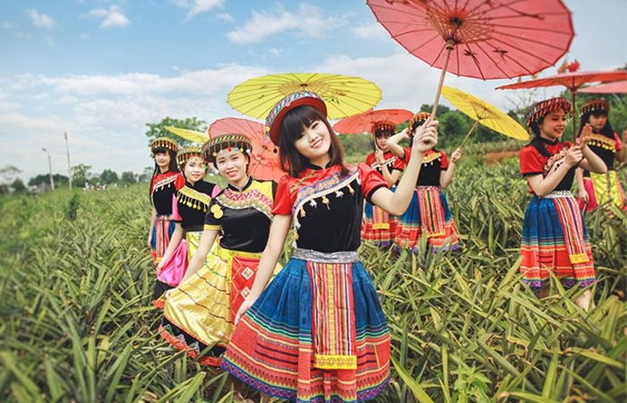
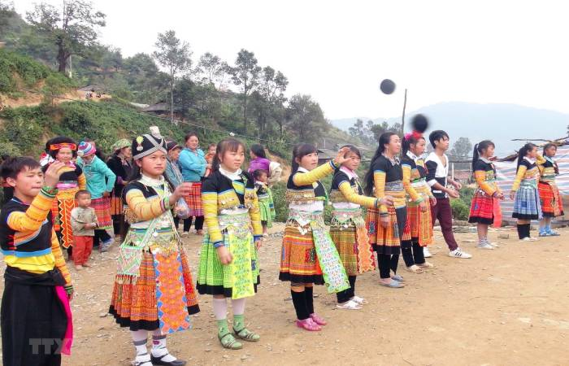
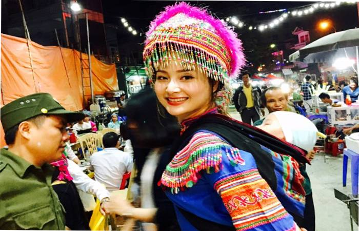

Dân tộc Mông là dân tộc thiểu số đông đúc của nước ta, sống chủ yếu tại vùng núi cao các tỉnh Tây Bắc như Lào Cai, Thanh Hoá, Nghệ An… Người Mông có văn hoá đặc Sắc.
Người dân tộc H’Mông còn được gọi là người Mông hay gọi theo phổ thông đại chúng từ xưa là người Mèo, vì thường phục sức toàn đen nên cũng gọi là người Mèo đen. Nhiều nơi, người Mèo thích sống ở vùng núi cao, dáng đi như nhảy từ thấp lên cao rất giỏi, nhanh lẹ, dù rằng môi trường sống trên núi cao có phần khắc nghiệt, nhiều trở ngại.
Tuy thế, người dân tộc Mông vốn có nhiều kinh nghiệm trồng lúa từ khá lâu, với kỹ thuật canh tác khá giỏi. Do hoàn cảnh sống ở các nơi hiểm trở và thiếu đất màu mỡ, họ thường san đắp sườn núi thành các thửa ruộng bậc thang. Nhiều mảnh ruộng chỉ nhỏ bằng chiếc chiếu, vậy mà họ đã đổ công sức vào đó, để sản xuất, giữ gìn hạt lúa.
1. Lối Sống Của Dân Tộc Mông.
Du khách du lịch Sapa vào mùa lúa chín rộ sẽ vô cùng ngạc nhiên và thích thú khi nhìn thấy vô số ruộng bậc thang từ thấp lên cao, hay ngược lại vàng óng ánh dưới ánh sáng mặt trời, từ mọi phía quanh con đường uốn lượn ngoặn ngoèo như con rắn bò lên núi đến Sapa hay tại những thung lũng bao bọc thị trấn miền cao này.

Các thửa ruộng bậc thang của người dân tộc Mông ở vùng Sapa có vẻ đẹp lạ kỳ, độc đáo. Các nhiếp ảnh gia và quay phim đã xếp cảnh quan các thửa ruộng này vào loại đẹp nhất miền Tây Bắc.
Xưa kia, dân tộc Mông có thói quen hay đốt rừng, phát hoang để làm nương rẫy trồng lúa ngô chỉ trong một hai vụ. Sau khi thu hoạch nông sản, họ bỏ đi tìm chổ khác tiếp tục đốt, phát hoang và trồng mới…
Lối sống du canh du cư này chấm dứt từ mấy mươi năm qua, sau khi được giải thích giáo dục và họ được giao rừng, giao đất để tự quản, sinh sống. Kể từ đó, rừng Sapa lần hồi tươi xanh trở lại, ruộng nương trở nên rộng lớn, sắc màu trù phú và hấp dẫn ngoạn mục.
2. Nhạc Cụ Của Người Mông.
Đàn ông dân tộc Mông có một tài nghệ đặt biệt: thổ và biểu diễn bằng động tác tay chân, thân người với loại khèn hay gọi là kềnh. Thổi Kềnh là một nhu cầu quan trọng như cơm ăn, nước uống. Nghe tiếng kềnh, người ta biết được họ đang khóc hay đang cười.
Người đàn ông dân tộc Mông còn có loại sáo đặt biệt gọi là Trà pùn tử. Sáo người Việt thường bằng ống tre hay trúc, có 6 lỗ bấm và thổi ngang. Trà pùn tử của người H’Mông có hình thức khác hơn gồm 1 hoặc 2 ống không gắn hay không có lưỡi gà, không lỗ bấm, có thể thổi dọc hay thổi ngang.
Âm thanh rất lạ, gồm những âm thô và rè cạnh những âm trong trẻo, êm ái như tiếng thủ thỉ, thấm sâu vào lòng người.

Sáo H’Mông là nhạc cụ của riêng các chàng trai. Họ luôn mang theo người vao bất cứ lúc nào như người bạn đường. Đó cũng là dụng cụ đắc lực để họ chinh phục trái tim các cô gái. Tiếng sáo làm say đắm mời người yêu và cũng thổ lộ tâm tình trong đêm sáng trăng thanh vắng, trên các triền núi thơ mộng trữ tình hay bên bìa rừng im ắng mù sương.
Từ năm 1961, người dân tộc Mông đã có chữ viết phiên âm tiếng nói của mình bằng cách ráp vần những chữ cái la tinh.
lễ hội Gầu Tào diễn ra vào nửa đầu tháng giêng được coi là quan trọng trong đời sống của họ. Thường lễ hội này tổ chức từ mồng 2 đến mồng 5 tết Nguyên đán, tại ruộng hay vùng đồi gần bản làng, nhằm mục đích cầu an, thịnh vượng cho gia đình, làng bản. Trong lễ hội có hát “chù gầu tàu”, thi bắn súng, nỏ, múa khèn, múa võ, đua ngựa bắn cung…
Nhà nào hiếm con hoặc có người thường đau bệnh, vận hạn xấu thì xin mở hội và phải làm trong 3 năm liền, mỗi năm 3 ngày, hoặc 1 năm làm 9 ngày liền. Trong lễ hội có cuộc vui chơi ăn uống, nhân dân xa gần tự động tới dự đông đảo.
Vào tháng 2, ngày thìn, người dân tộc Mông còn có lễ Nào Xồng, tổ chức tại khu rừng cấm của làng, nhằm mục đích cúng thổ địa, bàn bạc cùng nhau về việc xây dựng, thiết lập hương ước cho làng, làm lễ ăn thề và bầu người đứng đầu hội làng.
Người dân tộc Mông chiếm đa số dân cư tại Sapa nên đã góp một phần quan trọng về công sức xây dựng, phát triển cũng như tạo nên bản sắc đặc thù cho huyện miền núi và thị trấn du lịch này. Nhiều xã, thôn, bản làng hầu hết là người Mông cư ngụ như San Xả Hồ, Lao Chải, Sả Pả, Tả Giàng Phìn, Hầu Thào…
Người dân tộc Mông có khoảng hơn nửa triệu người ở Việt Nam, tập trung dọc theo các tỉnh biên giới Việt – Trung. Học cũng có ở Trung Quốc, Lào và Thái Lan. Sở dĩ xưa kia gọi là người Mèo vở ở Trung Quốc, hay gọi là Miêu. Ở Sapa, họ được gọi là Mèo đen, hay Mông đen là vì phụ nữ mặc váy màu đen. Ở Đồng Văn, đa số lại mặc xiêm váy sặc sỡ và được gọi là người Mông hoa.
3. Truyền Thuyết Của Đời Sống Dân Tộc Mông.
Tại sao người Mèo hay dân tộc Mông luôn ở trên đồi núi cao mà không ở tại các thung lũng có điều kiện và sinh sống dể dàng hơn ? Sự kiện này có liên quan đến một truyền thuyết.
Tương truyền vào thời xa xưa, người dân tộc Mông là cư dân sống ở miền bằng phẳng với những cánh đồng ruộng bao la. Kinh đô nước Tàu bị quân xâm lăng bao vây sắp thất thủ. Vua tàu hoảng sợ truyền hịch rao rằng ai giúp vua đánh lui được quân giặc sẽ được chia một nửa đất nước và còn được gả công chúa. Một dũng sỹ người dân tộc Mèo đã anh dũng giết được tướng giặc, đánh tan quân xâm lược vây kinh đô, cứu vua và cả triều đình. Chàng ta đòi vua phải thực hiện lời hứa.
Vua Tàu có ý tráo trở, đám quan cận thần ma mãnh bàn vào: “vua đã nói thì phải giữ lời hứa nhưng sẽ không chia đôi mặt bằng, mà chỉ chia cho bề cao. Một nửa là đất thấp, tức vùng đồng bằng, người Tàu sẽ tiếp tục ở. Một nửa đất trên núi cao, sẽ đem thưởng cho người dân tộc anh dũng ấy.
Câu chuyện này xem ra một phần nào là sự thật.

Xưa kia, từ phía Nam Trường Giang là lãnh thổ bao la của những dân tộc thuộc Bách Việt, có nhiều nền văn hoá đặc trưng. Trải qua hàng chục thế kỷ, các triều đại phong kiến Bắc phương xua quân về phương Nam làm áp lực. Nhiều dân tộc có lãnh thổ riêng như Đại Lý, Nam Chiếu, ba Thục, Mân Việt bị đánh tan, mất đất. Riêng người Lạc Việt vẫn tồn tại, biết mở rộng bờ cõi về phương Nam phát triển đến ngày nay. Những người không cam chịu cảnh Hán hoá phải lên núi cao hiểm trở để sinh sống.
Dân tộc Mông, Dao cũng là những dân tộc thuộc Bách Việt xưa, đã chạy trốn những cuộc trấn áp trong thời nhà minh và chỉ mới di cư vào lãnh thổ nước ta chừng khoảng 400 năm thôi.